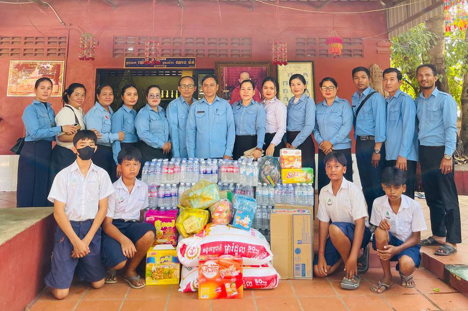

សាលាបឋមសិក្សាធ្លកអណ្តូង ជាសាលារៀនមួយ ដែលស្ថិតនៅភូមិធ្លកអណ្តូង មានផ្ទៃដីសរុប៨០0០ម៉ែត្រ ការ៉េក្បែរវត្តប្រាសាទត្រាំនាគ ដែលមានភូមិចំណុះពីរ គឺភូមិចុងកៅស៊ូ និងភូមិធ្លកអណ្តូងទើបបង្កើតថ្មី សង្កាត់ស្លក្រាម ក្រុងសៀមរាប ខេត្តសៀមរាប។ មានចម្ងាយពីការិយាល័យអប់រំក្រុងសៀមរាបប្រមាណ១២គីឡូម៉ែត ជាសាលាបង្គោលមួយក្នុងចំណោមសាលាបង្គោលទាំង១០ក្នុងក្រុងសៀមរាប។បើយើងធ្វើដំណើរតាមផ្លូវជាតិលេខ៦ពីសៀមរាបទៅភ្នំពេញ មកដល់ទល់មុខបុរីសៀងណាំ យើងត្រូវបត់ឆ្វេងទៅតាមផ្លូវត្រាំនាគចម្ងាយ៨០០ម៉ែត្រ យើងនឹងឃើញក្លោងទ្វារ សាលាបឋមសិក្សា និងអនុវិទ្យាល័យធ្លកអណ្តូងនៅខាងឆ្វេងដៃ។
បេសកកម្មរបស់សាលាបឋមសិក្សា ធ្លកអណ្ដូង គឺផ្តល់ការអប់រំមូលដ្ឋានដែលមានគុណភាព និងសមស្របសម្រាប់កុមារទាំងអស់ក្នុងសហគមន៍។ យើងជឿជាក់ថា ការអប់រំគឺជាគន្លងដ៏សំខាន់សម្រាប់អនាគតកុមារ ដូច្នេះសាលារបស់យើងបានប្តេជ្ញាផ្តល់ការបង្រៀនដែលមានគុណភាព និងបរិយាកាសសិក្សាដែលពោរពេញដោយក្តីស្រឡាញ់។ យើងផ្តោតលើការអភិវឌ្ឍជំនាញមូលដ្ឋាន ដូចជា អាន សរសេរ គណិតវិទ្យា និងជំនាញរស់នៅប្រចាំថ្ងៃ។ ក្រៅពីនេះ សាលា ធ្លកអណ្ដូង ក៏មានការចូលរួមយ៉ាងសកម្មពីឪពុកម្តាយ និងសហគមន៍ ក្នុងការគាំទ្រការអប់រំ ដើម្បីធានាថាកូនសិស្សទទួលបានការយកចិត្តទុកដាក់ និងការលើកទឹកចិត្តជានិច្ច។ បេសកកម្មរបស់យើងមិនត្រឹមតែផ្តោតលើការបង្រៀនប៉ុណ្ណោះទេ ប៉ុន្តែថែមទាំងផ្តោតលើការបង្កើតស្មារតីសហគមន៍ និងការគោរពវប្បធម៌។ យើងចង់ឱ្យកុមារមានស្មារតីសហគមន៍ និងការគោរពវប្បធម៌ ដើម្បីក្លាយជាពលរដ្ឋល្អក្នុងសង្គម
ទស្សនវិស័យរបស់សាលា ធ្លកអណ្ដូង គឺក្លាយជាសាលាបឋមសិក្សាដែលមានគុណភាព និងទទួលស្គាល់ក្នុងសហគមន៍។ យើងចង់ឱ្យកុមារមានចំណេះដឹង និងស្មារតីទំនួលខុសត្រូវក្នុងសង្គម។ យើងចង់ឱ្យកុមារមានស្មារតីសហគមន៍ និងការគោរពវប្បធម៌ ដើម្បីក្លាយជាពលរដ្ឋល្អក្នុងសង្គម។
សាលាបឋមសិក្សាធ្លកអណ្ដូង មានសកម្មភាពជាច្រើនដើម្បីលើកកម្ពស់ការសិក្សា និងការចូលរួមរបស់សិស្ស ដូចជា៖
 012 608 895
012 608 895